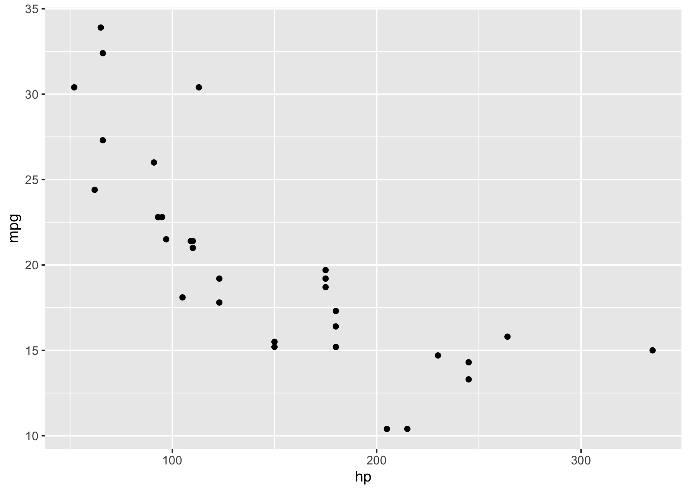

Execute R functions or code blocks within a Docker container.
It may be useful, in certain circumstances, to perform a computation in a separate R process that is running within a Docker container. This package attempts to achieve this!
Features
Calls an R function with arguments or a code block in a subprocess within a Docker container.
Copies function arguments (as necessary) to the subprocess and copies the return value of the function/code block.
Discovers and installs required packages in the Docker container at run-time.
Copies error objects back from the subprocess. In general, these error objects do not include the stack trace from the Docker R process. However, if for example the error is an rlang error, it will include the full stack trace.
Shows and/or collects the standard output and standard error of the Docker subprocess.
Installation
Install jetty from CRAN:
install.packages("jetty")Or install the development version of jetty from GitHub:
# install.packages("pak")
pak::pkg_install("dmolitor/jetty")Synchronous, one-off R processes in a Docker container
Use run() to execute an R function or code block in a new R process within a Docker container. The results are passed back directly to the local R session.
jetty::run(function() var(iris[, 1:4]))
#> Sepal.Length Sepal.Width Petal.Length Petal.Width
#> Sepal.Length 0.6856935 -0.0424340 1.2743154 0.5162707
#> Sepal.Width -0.0424340 0.1899794 -0.3296564 -0.1216394
#> Petal.Length 1.2743154 -0.3296564 3.1162779 1.2956094
#> Petal.Width 0.5162707 -0.1216394 1.2956094 0.5810063Specifying Docker container
The desired Docker container can be set via the image argument, and should be specified as a string in standard Docker format. These formats include username/image:tag, username/image, image:tag, and image. The default choice is r-base:{jetty:::r_version()} which is a bare-bones R image that mirrors the R version running locally. For example, the following command would be executed in the official r-base image with the latest version of R, which comes with no packages beyond the base set installed:
Passing arguments
You can pass arguments to the function by setting args to the list of arguments, similar to the base do.call function. This is often necessary, as the function being evaluated in the Docker R process does not have access to variables in the parent process. For example, the following does not work:
mycars <- cars
jetty::run(function() summary(mycars))
#> Error in (function () : object 'mycars' not foundBut this does:
Using packages
You can use any package in the child R process, with the caveat that the package must be installed in the Docker container. While it’s recommended to refer to it explicitly with the :: operator, the code snippet can also call library() or require() and will work fine. For example, the following code snippets both work equally well:
jetty::run(
{
library(Matrix);
function(nrow, ncol) rsparsematrix(nrow, ncol, density = 1)
},
args = list(nrow = 10, ncol = 2)
)
#> Loading required package: Matrix
#> 10 x 2 sparse Matrix of class "dgCMatrix"
#>
#> [1,] -0.55 -0.230
#> [2,] -1.20 0.170
#> [3,] 1.70 1.100
#> [4,] 0.89 0.660
#> [5,] -0.42 0.860
#> [6,] 0.75 0.340
#> [7,] -0.28 1.100
#> [8,] 0.69 -1.000
#> [9,] -1.10 0.043
#> [10,] -2.30 -0.220and
jetty::run(
function(nrow, ncol) Matrix::rsparsematrix(nrow, ncol, density = 1),
args = list(nrow = 10, ncol = 2)
)
#> 10 x 2 sparse Matrix of class "dgCMatrix"
#>
#> [1,] 0.027 -1.90
#> [2,] 0.300 0.26
#> [3,] 0.022 0.37
#> [4,] -1.100 1.30
#> [5,] 1.900 -0.88
#> [6,] -0.140 -0.43
#> [7,] -0.980 -1.50
#> [8,] 0.350 0.72
#> [9,] -0.350 0.69
#> [10,] 0.870 1.00Installing required packages
jetty also supports installing required packages at runtime. For example, the following code will fail because the required packages are not installed in the Docker image:
jetty::run(
{
ggplot2::ggplot(mtcars, ggplot2::aes(x = hp, y = mpg)) +
ggplot2::geom_point()
}
)
#> Error in loadNamespace(x): there is no package called ‘ggplot2’However, by setting install_dependencies = TRUE we can tell jetty to discover the required packages and install them before executing the code:
jetty::run(
{
ggplot2::ggplot(mtcars, ggplot2::aes(x = hp, y = mpg)) +
ggplot2::geom_point()
},
install_dependencies = TRUE,
stdout = TRUE
)
Note: this feature uses renv::dependencies to discover the required packages, and won’t handle all possible scenarios. In particular, it won’t install specific package versions (just the latest version) and it will only install packages that are on CRAN. Use this with care!
Error handling
jetty copies errors from the child R process to the main R session:
jetty::run(function() 1 + "A")
#> Error in 1 + "A": non-numeric argument to binary operatorAlthough the errors themselves are propagated to the main R session, the stack trace is (currently) not propagated. This means that calling functions such as traceback() and rlang::last_trace() won’t be of any help.
Standard output and error
By default, the standard output and error of the Docker subprocess are printed to the R console. However, since jetty uses system2() to execute all Docker commands, you can specify the stdout and stderr arguments which will be passed directly to system2(). For example the following code will print a series of messages to the console:
jetty::run({for (i in 1:5) message(paste0("iter", i)); TRUE})
#> iter1
#> iter2
#> iter3
#> iter4
#> iter5
#> [1] TRUEBut you can discard this output by setting stdout = FALSE:
To see more details on controlling stdout and stderr, check out the documentation here.
.Rprofile and .Renviron
jetty also provides some support for .Rprofile and .Renviron files. By default, jetty will search for files called “.Rprofile” and “.Renviron” in the current working directory. If these files exist, jetty will port them to the Docker execution environment and will execute any code in .Rprofile and load all environment variables in .Renviron before executing the provided R code. If the .Rprofile file uses external packages, it is essential to tell jetty to install required packages (as described above) otherwise the code will fail.
The user can explicitly provide .Rprofile and .Renviron file paths via the r_profile and r_environ arguments. For example, the following code will attach the .Rprofile found in the /man/scaffolding/ sub-directory of the current working directory. This file simply uses the praise package to provide some encouragement at the start of a new R session.
four <- jetty::run(
\() 2 + 2,
r_profile = here::here("man/scaffolding/.Rprofile"),
install_dependencies = TRUE
)
#> Installing package into ‘/usr/local/lib/R/site-library’
#> (as ‘lib’ is unspecified)
#> trying URL 'https://r-lib.github.io/p/pak/stable/source/linux-gnu/aarch64/src/contrib/../../../../../linux/aarch64/pak_0.8.0_R-4-4_aarch64-linux.tar.gz'
#> Content type 'application/gzip' length 8847947 bytes (8.4 MB)
#> ==================================================
#> downloaded 8.4 MB
#>
#> * installing *binary* package ‘pak’ ...
#> * DONE (pak)
#>
#> The downloaded source packages are in
#> ‘/tmp/RtmpNxnaJk/downloaded_packages’
#> ✔ Updated metadata database: 3.07 MB in 8 files.
#> ✔ Updating metadata database ... done
#>
#> → Will install 1 package.
#> → Will download 1 CRAN package (6.10 kB).
#> + praise 1.0.0 [bld][dl] (6.10 kB)
#>
#> ℹ Getting 1 pkg (6.10 kB)
#> ✔ Got praise 1.0.0 (source) (6.10 kB)
#> ℹ Building praise 1.0.0
#> ✔ Built praise 1.0.0 (403ms)
#> ✔ Installed praise 1.0.0 (7ms)
#> ✔ 1 pkg: added 1, dld 1 (6.10 kB) [3.8s]
#> You are exquisite!However, as noted above, this fails if install_dependencies = FALSE.
four <- jetty::run(
\() 2 + 2,
r_profile = here::here("man/scaffolding/.Rprofile")
)
#> Error in loadNamespace(x): there is no package called ‘praise’Multiple .Rprofile or .Renviron files
Currently jetty only supports single .Rprofile or .Renviron files. So, for example, if a user has a project-specific .Rprofile in the current working directory at ./.Rprofile and then a user-specific .Rprofile at ~/.Rprofile, jetty will only source ./.Rprofile and will ignore ~/.Rprofile. This is a feature I plan to add before long.